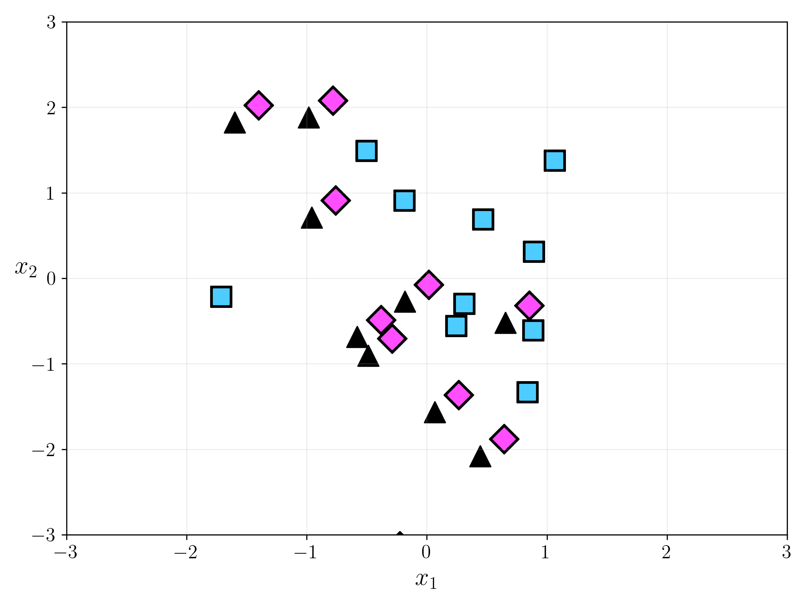
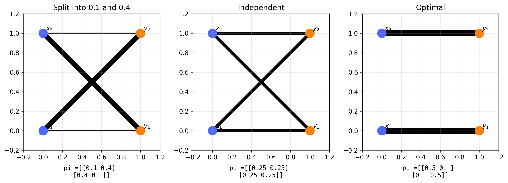

Couplings of measures
Hannah Louisa Boldt h.boldt@campus.tu-berlin.de
June 4th 2026, TU Berlin
Contents
- Couplings of Probability Measures
- Probability Measures
- Independent couplings
- Optimal couplings
- Couplings from maps
- Distance of Probability Measures
- Total Variation Norm
- Wasserstein Distance
- Couplings of Atomic Measures
- Brenier's theorem
- Transportation Maps of Gaussian
- Summary
Examples: Probability Measures
The space \(\mathcal{P}(\mathbb{R}^d)\) is convex but not linear.
is again a probability measure.
Probability measures can be visualized through samples or realizations.
Examples:
-
Dirac measures \(\delta_x\), \(x \in \mathbb{R}^d\)
\[ \delta_x(\{x\})=1,\qquad \delta_x(\mathbb{R}^d\setminus\{x\})=0 \]
- Convex combinations of Dirac measures (Atomic Measures)
-
Gaussian measures
\[ \mu(A) := \int_A \frac{1}{(2\pi\sigma^2)^{d/2}} e^{-\frac{|x|^2}{2\sigma^2}} \,dx \]
Sample of Gaussian distribution


Plot below shows 3 datapoints sampled from the distribution
Sample of 2D Gaussian distribution
Distance of Measures: TV norm

TV of Probability measures is always 2, but intuitively the cross measure should be closer to the dot measure. (check on board)
Different distance! Wasserstein (later)
Total Variation Norm
TV distance between Atomic measures
TV norm between two Atomic measures $\mu$ and $\nu$ is always 2 Let $\delta_x, x \in \mathbb{R}^d$ be defined by $$ \delta_x(A):= \begin{cases}1 & \text { if } x \in A, \\ 0 & \text { otherwise },\end{cases} $$ and $$ \mu:=\sum_{k=1}^n \mu_k \delta_{x_k}, \quad \mu_k \in \mathbb{R} $$ Then $$ \|\mu\|_{T V}=\sum_{k=1}^n\left|\mu_k\right|, \quad|\mu|(A)=\sum_{k=1}^n\left|\mu_k\right| \delta_{x_k}(A) $$ For probability measures $\mu$ with $\sum_{k=1}^n \mu_k=1$ and $\mu_k \geq 0$ and $\nu:=\sum_{j=1}^m \nu_j \delta_{y_j}, x_k \neq y_j$, we get $$ \|\mu-\nu\|_{T V}=\sum_{k=1}^n\left|\mu_k\right|+\sum_{j=1}^m\left|\nu_j\right|=2 $$
Recap: Push-Forward Measures
Wasserstein Distance
$\displaystyle W_2^2(\mu, \nu):=$ $\displaystyle \min _{\pi \in \Pi(\mu, \nu )}$ $\displaystyle \int_{\mathbb{R}^d \times \mathbb{R}^d}\|x-y\|_2^2 \mathrm{~d} \pi(x, y) $
$\mathcal{P}_2\left(\mathbb{R}^d\right)$ becomes a complete metric space, where $\pi \in \mathcal{P}\left(\mathbb{R}^d \times \mathbb{R}^d\right)$ is a coupling from$$ \Pi(\mu, \nu):=\left\{\pi \in \mathcal{P}\left(\mathbb{R}^d \times \mathbb{R}^d\right):\left(P_1\right)_{\#} \pi=\mu,\left(P_2\right)_{\#} \pi=\nu\right\} \quad \textbf{Couplings of $\mu$ and $\nu$} $$
where the projection is $P^1: \mathbb{R}^d \times \mathbb{R}^d \rightarrow \mathbb{R}^d, \quad P^1(x, y)=x$.Lets look at examples of couplings and then calculate their Wasserstein distance!
1. Independent couplings 2. Optimal couplings 3. Couplings from maps
Couplings of Atomic Measures

Three possible couplings of two atomic measures $\mu$ and $\nu$ with support points $x_1, x_2$ and $y_1, y_2$. The larger the line the larger the mass transported between two points.
Example 1
Given atomic measures:
$x_1 = (0,0), x_2 = (1,0), x_3 = (0,1)$
$y_1 = (1,1), y_2 = (2,0)$
$\mu=\frac{1}{6}\left(3\delta_{x_1}+1\delta_{x_2}+2\delta_{x_3}\right)$
$\nu=\frac{1}{6}\left(4\delta_{y_1}+2\delta_{y_2}\right)$
Optimal map: $T(x_1)=y_2,\; T(x_2)=y_2,\; T(x_3)=y_1$

Example 2
We have two combinations of diracs:
$x_1=(0,0),\; x_2=(1,0),\; x_3=(0,1)$
$y_1=(1,1),\; y_2=(2,0)$
$\mu=3\delta_{x_1}+1\delta_{x_2}+2\delta_{x_3}$
$\nu=2\delta_{y_1}+4\delta_{y_2}$
Optimal map: $T(x_1)=y_2,\; T(x_2)=y_2,\; T(x_3)=y_1$

Example 3
We have two combinations of diracs:
$x_1=(1,1),\; x_2=(2,0)$
$y_1=(0,0),\; y_2=(1,0),\; y_3=(0,1)$
$\mu=2\delta_{x_1}+4\delta_{x_2}$
$\nu=3\delta_{y_1}+1\delta_{y_2}+2\delta_{y_3}$
Optimal map: does not exist.

Calculate Wasserstein Distance of Atomic Measures
In this simple case a minimizer can be explicitly calculated.
Wasserstein distance: Solution of a linear optimization problem $$ \begin{aligned} W_2(\mu, \nu) & =\min _{\pi \in \Pi(\mu, \nu)} \sum_{i, j=1}^{m, n} \pi_{i, j}\left\|x_i-y_j\right\|^2 \\ & =\min _\pi\langle c, \pi\rangle \text { s.t. } \pi 1_n=\mu, \pi^{\top} 1_m=\nu, \pi \geq 0 \end{aligned} $$
Under certain conditions the optimal coupling is unique! (Brenier)
Brenier's Theorem
- The optimal coupling $\pi$ is unique.
-
It can be written as
$\pi = (I, T)_{\# \mu}$, where $(I, T): \mathbb{R}^d \rightarrow \mathbb{R}^d \times \mathbb{R}^d$,
$x \mapsto (x, T(x))$
, with $T \in L_\mu^2(\mathbb{R}^d, \mathbb{R}^d)$ being the optimal transport map, i.e.
$$ W_2^2(\mu, \nu) = \int_{\mathbb{R}^d} \|x - T(x)\|^2 \, d\mu(x) \quad \text{subject to} \quad \nu = T_{\# \mu} $$ -
It holds
$$ T(x) = \nabla \psi(x) \quad \text{for } \mu\text{-a.e. } x, $$ for some lower semi-continuous, convex, differentiable function $\psi: \mathbb{R}^d \rightarrow \mathbb{R}^d$ (Brenier potential). -
Conversely, if $\psi$ is lower semi-continuous, convex and differentiable $\mu$-a.e., with $\nabla \psi \in L_\mu^2(\mathbb{R}^d, \mathbb{R}^d)$, then
$$ T = \nabla \psi $$ is the optimal transport map from $\mu$ to $\nu = T_{\#}\mu \in \mathcal{P}_2(\mathbb{R}^d)$.
Wasserstein Distance of Gaussians
For two Gaussians $$ \mu=\mathcal{N}\left(m_\mu, \Sigma_\mu\right), \quad \nu=\mathcal{N}\left(m_\nu, \Sigma_\nu\right) $$ where $\mathcal{N}(m, \Sigma)$ has the density $$ p(x):=(2 \pi)^{-\frac{d}{2}}(\operatorname{det} \Sigma)^{-\frac{1}{2}} \mathrm{e}^{-\frac{1}{2}(x-m)^{\top} \Sigma^{-1}(x-m)}, $$ the optimal transport map is given by $$ \begin{gathered} T(x)=m_\nu+A\left(x-m_\mu\right), \quad A:=\Sigma_\mu^{-\frac{1}{2}}\left(\Sigma_\mu^{\frac{1}{2}} \Sigma_\nu \Sigma_\mu^{\frac{1}{2}}\right)^{\frac{1}{2}} \Sigma_\mu^{-\frac{1}{2}} \\ W_2^2(\mu, \nu)=\int\|x-T(x)\|^2 \mathrm{~d} x= \left\|m_\mu-m_\nu\right\|^2+\operatorname{Tr}\left(\Sigma_\mu+\Sigma_\nu-2\left(\Sigma_\nu^{\frac{1}{2}} \Sigma_\mu \Sigma_\nu^{\frac{1}{2}}\right)^{\frac{1}{2}}\right) \end{gathered} $$
Wasserstein Distance of Gaussians
Paths for $t \in[0,1]$ between $\mu=\mathcal{N}(0,1)\, dx$ and $\nu=\mathcal{N}(m,\sigma)\, dx$ :
- $\mu_t=(1-t) \mu+t \nu$, i.e. $p_t=(1-t) \mathcal{N}(0,1)+t \mathcal{N}(m, \sigma)$
- $X_t=(1-t) X_\mu+t X_\nu$, where $X_\mu \sim \mu, X_\nu \sim \nu, \mu_t \sim X_t$
Teleport
Wasserstein Distance of Gaussians
Paths for $t \in[0,1]$ between $\mu=\mathcal{N}(0,1)\, dx$ and $\nu=\mathcal{N}(m,\sigma)\, dx$ :
- If $X_\mu, X_\nu$ independent, i.e. with joint distribution $\pi=\mu \otimes \nu$, we get by convolution $$ p_t=\int_{\mathbb{R}^d} p_\mu\left(\frac{1}{1-t} y\right) p_\nu\left(\frac{1}{t}(\cdot-y)\right) \mathrm{d} y=\mathcal{N}\left(t m,(1-t)^2+t^2 \sigma^2\right) $$
Independent
Wasserstein Distance of Gaussians
Paths for $t \in[0,1]$ between $\mu=\mathcal{N}(0,1)\, dx$ and $\nu=\mathcal{N}(m,\sigma)\, dx$ :
- If $\left(X_\mu, X_\nu\right) \sim \pi=(I, T)_{\sharp \mu}$ and $T_t: \mathbb{R}^d \rightarrow \mathbb{R}^d, T_t(x):=(1-t) x+t T(x)$ $$ e_t: \mathbb{R}^d \times \mathbb{R}^d \rightarrow \mathbb{R}^d, e_t(x, y):=(1-t) x+t y $$ Then $$ \mu_t=\left(T_t\right)_{\sharp} \mu=\left(e_t\right)_{\sharp} \pi $$ and if $\mu$ has density $p$ we know that $\mu_t$ has density $p_t=C p\left(T_t^{-1} \cdot\right)$. Thus, with the optimal transport map $T(x)=m+\sigma x$, we obtain $$ p_t=\mathcal{N}(t m, 1-t+t \sigma) $$
Optimal
Comparison of Interpolations

The interpolation parameter $t$ goes from $0$ (orange) to $1$ (blue). Note that while idependent and optimal still give gaussians where the mean moves linearly from the first to the second gaussian.
Summary
Thank You for listening!
References